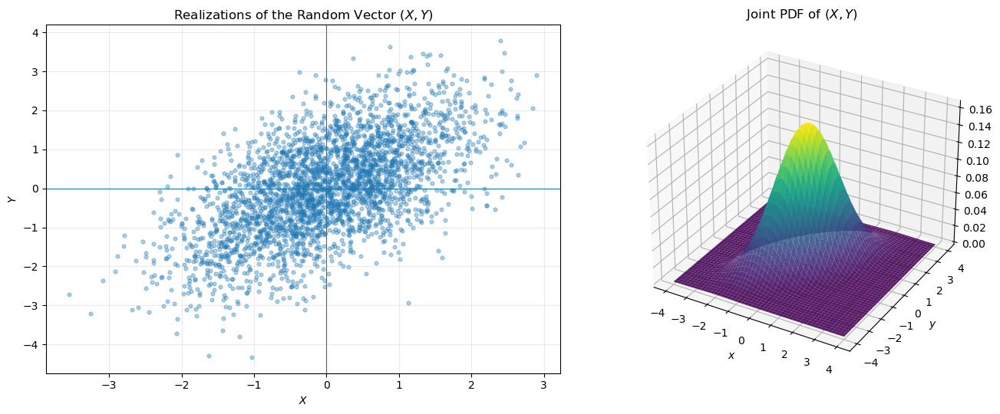
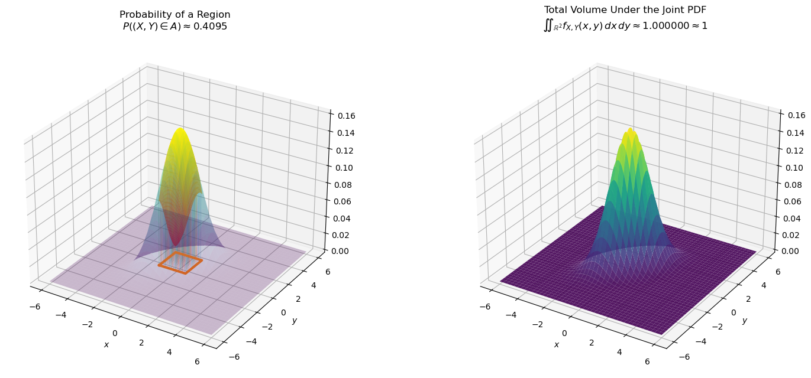
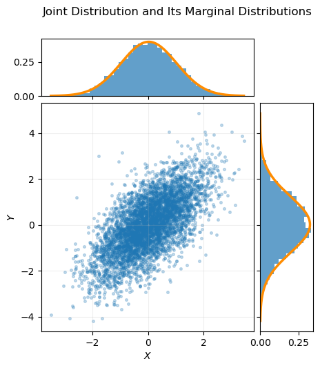
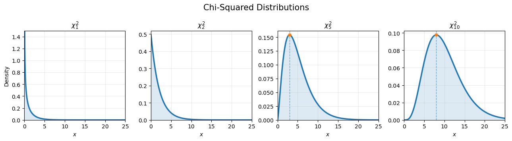
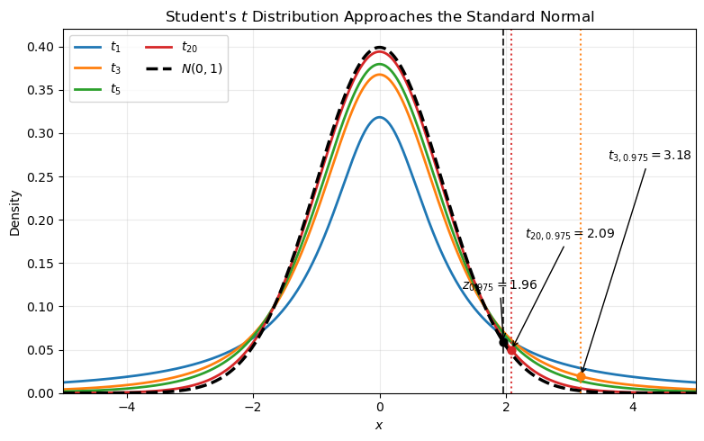
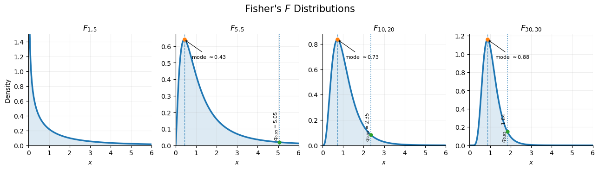

Show Python code
import numpy as np
import matplotlib.pyplot as plt
from scipy import stats
from scipy.integrate import trapezoid
# Reproducible simulations
rng = np.random.default_rng(42)Carlos Buitrago & Anastasiya Chikalova
A random vector is a measurable function
\[ \mathbf X:\Omega\to\mathbb R^n. \]
We write
\[ \mathbf X=(X_1,\ldots,X_n), \]
where each \(X_i:\Omega\to\mathbb R\) is called a component of the random vector.
The vector \((X_1,\ldots,X_n)\) is a random vector if and only if \(X_1,\ldots,X_n\) are random variables.
The joint cumulative distribution function (CDF) of
\[ \mathbf X=(X_1,\ldots,X_n) \]
is defined by
\[ F_{X}(x_1,\ldots,x_n) = \mathbb P(X_1\le x_1,\ldots,X_n\le x_n). \]
A random vector \(\mathbf X=(X_1,\ldots,X_n)\) is called absolutely continuous if there exists a function
\[ p:\mathbb R^n\to\mathbb R_+ \]
such that
\[ \boxed{ F(x_1,\ldots,x_n) = \int_{-\infty}^{x_1} \cdots \int_{-\infty}^{x_n} p(t_1,\ldots,t_n) \,dt_1\cdots dt_n. } \]
The function \(p\) is called the joint probability density function (PDF).
# Random vectors and their joint PDF
# Parameters
mean = np.array([0, 0])
covariance = np.array([
[1.0, 0.75],
[0.75, 1.5]
])
# Simulate realizations of the random vector
n = 3000
samples = rng.multivariate_normal(
mean,
covariance,
size=n
)
X = samples[:, 0]
Y = samples[:, 1]
# Construct the joint PDF
distribution = stats.multivariate_normal(
mean=mean,
cov=covariance
)
x = np.linspace(-4, 4, 150)
y = np.linspace(-4, 4, 150)
X_grid, Y_grid = np.meshgrid(x, y)
positions = np.dstack((X_grid, Y_grid))
joint_pdf = distribution.pdf(positions)
# Draw both graphs next to each other
fig = plt.figure(figsize=(14, 5.5))
# Realizations of the random vector
ax_1 = fig.add_subplot(1, 2, 1)
ax_1.scatter(
X,
Y,
s=12,
alpha=0.35
)
ax_1.axhline(0, linewidth=0.8)
ax_1.axvline(0, linewidth=0.8)
ax_1.set_xlabel("$X$")
ax_1.set_ylabel("$Y$")
ax_1.set_title("Realizations of the Random Vector $(X,Y)$")
ax_1.grid(alpha=0.25)
# Three-dimensional joint PDF
ax_2 = fig.add_subplot(
1,
2,
2,
projection="3d"
)
ax_2.plot_surface(
X_grid,
Y_grid,
joint_pdf,
cmap="viridis",
edgecolor="none",
alpha=0.9
)
ax_2.set_xlabel("$x$")
ax_2.set_ylabel("$y$")
#ax_2.set_zlabel("$f_{X,Y}(x,y)$")
ax_2.set_title("Joint PDF of $(X,Y)$")
plt.tight_layout()
plt.show()
\[ \mathbb P(\mathbf X\in B) = \int_B p(x_1,\ldots,x_n)\,dx. \]
\[ p(x_1,\ldots,x_n) = \frac{\partial^nF} {\partial x_1\cdots\partial x_n}. \]
\[ \int_{\mathbb R^n} p(x_1,\ldots,x_n)\,dx = 1. \]
# Probability over a region and total volume under a joint PDF
from scipy.integrate import trapezoid
# ---------------------------------------------------------
# Joint distribution
# ---------------------------------------------------------
mean = np.array([0, 0])
covariance = np.array([
[1.0, 0.65],
[0.65, 1.4]
])
distribution = stats.multivariate_normal(
mean=mean,
cov=covariance
)
# Wide grid capturing essentially all probability mass
x = np.linspace(-6, 6, 220)
y = np.linspace(-6, 6, 220)
X_grid, Y_grid = np.meshgrid(x, y)
positions = np.dstack((X_grid, Y_grid))
joint_pdf = distribution.pdf(positions)
# Numerical approximation of the total volume
integral_over_y = trapezoid(
joint_pdf,
y,
axis=0
)
total_probability = trapezoid(
integral_over_y,
x
)
# ---------------------------------------------------------
# Event A = [a,b] × [c,d]
# ---------------------------------------------------------
a, b = -1.2, 0.8
c, d = -0.6, 1.4
x_region = np.linspace(a, b, 100)
y_region = np.linspace(c, d, 100)
X_region, Y_region = np.meshgrid(
x_region,
y_region
)
region_positions = np.dstack(
(X_region, Y_region)
)
region_pdf = distribution.pdf(region_positions)
# Probability of the selected event
integral_region_y = trapezoid(
region_pdf,
y_region,
axis=0
)
region_probability = trapezoid(
integral_region_y,
x_region
)
# ---------------------------------------------------------
# Draw the two graphs next to each other
# ---------------------------------------------------------
fig = plt.figure(figsize=(16, 6.5))
# =========================================================
# Left: probability of a selected region
# =========================================================
ax_1 = fig.add_subplot(
1,
2,
1,
projection="3d"
)
# Full density as a transparent reference surface
ax_1.plot_surface(
X_grid,
Y_grid,
joint_pdf,
cmap="viridis",
edgecolor="none",
alpha=0.25
)
# Highlighted surface above the selected region
ax_1.plot_surface(
X_region,
Y_region,
region_pdf,
cmap="autumn",
edgecolor="none",
alpha=0.95
)
# Vertical segments emphasizing the volume
step = 8
for i in range(0, len(y_region), step):
for j in range(0, len(x_region), step):
ax_1.plot(
[X_region[i, j], X_region[i, j]],
[Y_region[i, j], Y_region[i, j]],
[0, region_pdf[i, j]],
linewidth=0.6,
alpha=0.3
)
# Boundary of A on the xy-plane
rectangle_x = [a, b, b, a, a]
rectangle_y = [c, c, d, d, c]
rectangle_z = [0, 0, 0, 0, 0]
ax_1.plot(
rectangle_x,
rectangle_y,
rectangle_z,
linewidth=3
)
ax_1.set_xlabel("$x$")
ax_1.set_ylabel("$y$")
#ax_1.set_zlabel("$f_{X,Y}(x,y)$")
ax_1.set_title(
"Probability of a Region\n"
rf"$P((X,Y)\in A)\approx {region_probability:.4f}$"
)
ax_1.set_zlim(bottom=0)
ax_1.view_init(elev=28, azim=-58)
# =========================================================
# Right: total volume under the density
# =========================================================
ax_2 = fig.add_subplot(
1,
2,
2,
projection="3d"
)
# Entire surface represents all possible values of (X,Y)
ax_2.plot_surface(
X_grid,
Y_grid,
joint_pdf,
cmap="viridis",
edgecolor="none",
alpha=0.9
)
# Vertical segments across the full relevant region
step_full = 14
for i in range(0, len(y), step_full):
for j in range(0, len(x), step_full):
if joint_pdf[i, j] > 0.001:
ax_2.plot(
[X_grid[i, j], X_grid[i, j]],
[Y_grid[i, j], Y_grid[i, j]],
[0, joint_pdf[i, j]],
linewidth=0.45,
alpha=0.18
)
ax_2.set_xlabel("$x$")
ax_2.set_ylabel("$y$")
#ax_2.set_zlabel("$f_{X,Y}(x,y)$")
ax_2.set_title(
"Total Volume Under the Joint PDF\n"
rf"$\iint_{{\mathbb{{R}}^2}} f_{{X,Y}}(x,y)\,dx\,dy"
rf"\approx {total_probability:.6f}\approx 1$"
)
ax_2.set_zlim(bottom=0)
ax_2.view_init(elev=28, azim=-58)
plt.tight_layout()
plt.show()
print(
f"Probability over the selected region: "
f"{region_probability:.6f}"
)
print(
f"Total volume under the joint PDF: "
f"{total_probability:.6f}"
)
Probability over the selected region: 0.409509
Total volume under the joint PDF: 1.000000The marginal PDF of \(X_i\) is obtained by integrating the joint density over all remaining variables.
For example,
\[ p_{X_1}(x_1) = \int_{\mathbb R} \cdots \int_{\mathbb R} p(x_1,\ldots,x_n) \,dx_2\cdots dx_n. \]
For two random variables \((X,Y)\), the marginal densities are
\[ p_X(x) = \int_{-\infty}^{\infty} p(x,y)\,dy, \]
and
\[ p_Y(y) = \int_{-\infty}^{\infty} p(x,y)\,dx. \]
# Generate a dependent random vector
mean = np.array([0, 0])
covariance = np.array([
[1.0, 0.8],
[0.8, 1.5]
])
samples = rng.multivariate_normal(
mean,
covariance,
size=5000
)
X = samples[:, 0]
Y = samples[:, 1]
# Parameters of the fitted marginal normal distributions
mu_X = np.mean(X)
sigma_X = np.std(X, ddof=1)
mu_Y = np.mean(Y)
sigma_Y = np.std(Y, ddof=1)
# Create a smaller figure
fig = plt.figure(figsize=(5.8, 5.8))
grid = fig.add_gridspec(
2,
2,
width_ratios=(4, 1),
height_ratios=(1, 4),
hspace=0.05,
wspace=0.05
)
ax_scatter = fig.add_subplot(grid[1, 0])
ax_hist_x = fig.add_subplot(
grid[0, 0],
sharex=ax_scatter
)
ax_hist_y = fig.add_subplot(
grid[1, 1],
sharey=ax_scatter
)
# ---------------------------------------------------------
# Joint observations
# ---------------------------------------------------------
ax_scatter.scatter(
X,
Y,
s=7,
alpha=0.25
)
ax_scatter.set_xlabel("$X$")
ax_scatter.set_ylabel("$Y$")
ax_scatter.grid(alpha=0.2)
# ---------------------------------------------------------
# Marginal distribution of X
# ---------------------------------------------------------
ax_hist_x.hist(
X,
bins=40,
density=True,
alpha=0.7
)
x_grid = np.linspace(
X.min(),
X.max(),
400
)
ax_hist_x.plot(
x_grid,
stats.norm.pdf(
x_grid,
loc=mu_X,
scale=sigma_X
),
color="darkorange",
linewidth=2.5
)
# ---------------------------------------------------------
# Marginal distribution of Y
# ---------------------------------------------------------
ax_hist_y.hist(
Y,
bins=40,
density=True,
orientation="horizontal",
alpha=0.7
)
y_grid = np.linspace(
Y.min(),
Y.max(),
400
)
ax_hist_y.plot(
stats.norm.pdf(
y_grid,
loc=mu_Y,
scale=sigma_Y
),
y_grid,
color="darkorange",
linewidth=2.5
)
# Hide duplicated marginal-axis labels
ax_hist_x.tick_params(labelbottom=False)
ax_hist_y.tick_params(labelleft=False)
fig.suptitle(
"Joint Distribution and Its Marginal Distributions",
fontsize=12,
y=0.94
)
# Center the complete plot inside the figure
fig.subplots_adjust(
left=0.16,
right=0.84,
bottom=0.13,
top=0.86
)
plt.show()
Random vectors \(\mathbf X_1,\ldots,\mathbf X_n\) are mutually independent if
\[ \mathbb P(\mathbf X_1\in B_1,\ldots,\mathbf X_n\in B_n) = \prod_{i=1}^n \mathbb P(\mathbf X_i\in B_i) \]
for every collection of Borel sets \(B_1,\ldots,B_n\).
Random variables \(X_1,\ldots,X_n\) are independent if and only if
\[ \boxed{ F_{X_1,\ldots,X_n}(x_1,\ldots,x_n) = \prod_{i=1}^n F_{X_i}(x_i). } \]
Suppose that \(X_1,\ldots,X_n\) are independent continuous random variables with PDFs
\[ p_1,\ldots,p_n. \]
Then \((X_1,\ldots,X_n)\) is an absolutely continuous random vector with joint density
\[ p(x_1,\ldots,x_n) = \prod_{i=1}^n p_i(x_i). \]
If \(X\) and \(Y\) are independent continuous random variables, then
\[ \boxed{ p_{X+Y}(x) = \int_{-\infty}^{\infty} p_X(t) p_Y(x-t) \,dt. } \]
This formula is called the convolution formula.
Let
\[ X\sim N(\mu_1,\sigma_1^2), \qquad Y\sim N(\mu_2,\sigma_2^2), \]
and suppose that \(X\perp Y\).
By the convolution formula,
\[ X+Y \sim N\!\left( \mu_1+\mu_2, \, \sigma_1^2+\sigma_2^2 \right). \]
Let
\[ X\sim \Gamma(\alpha_1,\lambda), \qquad Y\sim \Gamma(\alpha_2,\lambda), \]
where \(\lambda\) is the common rate parameter, and suppose that \(X\perp Y\).
By the convolution formula,
\[ X+Y \sim \Gamma(\alpha_1+\alpha_2,\lambda). \]
Let \(Z_1,\ldots,Z_n\) be independent standard normal random variables, that is,
\[ Z_i\sim N(0,1). \]
The random variable
\[ \boxed{ X=\sum_{i=1}^{n}Z_i^2 } \]
is said to have a Chi-squared distribution with \(n\) degrees of freedom.
We write
\[ X\sim\chi_n^2. \]
# Chi-squared distributions
degrees_of_freedom = [1, 2, 5, 10]
fig, axes = plt.subplots(
1,
4,
figsize=(13, 3.6),
sharex=True
)
x = np.linspace(0.02, 25, 1000)
for ax, df in zip(axes, degrees_of_freedom):
density = stats.chi2.pdf(x, df=df)
ax.plot(
x,
density,
linewidth=2.5
)
ax.fill_between(
x,
density,
alpha=0.15
)
# Mark the mode when it exists
if df > 2:
mode = df - 2
mode_density = stats.chi2.pdf(mode, df=df)
ax.scatter(
mode,
mode_density,
s=25,
zorder=3
)
ax.axvline(
mode,
linestyle="--",
linewidth=1,
alpha=0.6
)
ax.set_title(
rf"$\chi^2_{{{df}}}$",
fontsize=12
)
ax.set_xlim(0, 25)
ax.set_ylim(bottom=0)
ax.grid(alpha=0.25)
# Limit only the first panel
axes[0].set_ylim(0, 1.5)
# Labels only where needed
axes[0].set_ylabel("Density")
for ax in axes:
ax.set_xlabel("$x$")
fig.suptitle(
"Chi-Squared Distributions",
fontsize=15
)
fig.tight_layout()
plt.show()
Let \(Z\sim N(0,1)\), and \(X\sim\chi_n^2\), where \(Z\) and \(X\) are independent.
The random variable
\[ \boxed{ T= \frac{Z}{\sqrt{X/n}} } \]
is said to have a Student’s \(t\) distribution with \(n\) degrees of freedom.
We write
\[ T\sim t_n. \]
x = np.linspace(-5, 5, 1000)
degrees_of_freedom = [1, 3, 5, 20]
fig, ax = plt.subplots(figsize=(8, 5))
# Plot t distributions
for df in degrees_of_freedom:
ax.plot(
x,
stats.t.pdf(x, df=df),
linewidth=2,
label=rf"$t_{{{df}}}$"
)
# Plot standard normal
normal_pdf = stats.norm.pdf(x)
ax.plot(
x,
normal_pdf,
linestyle="--",
color="black",
linewidth=2.5,
label=r"$N(0,1)$"
)
# ---------------------------------------------------------
# 97.5% quantiles
# ---------------------------------------------------------
z975 = stats.norm.ppf(0.975)
t3 = stats.t.ppf(0.975, df=3)
t20 = stats.t.ppf(0.975, df=20)
# Vertical lines
ax.axvline(z975, color="black", linestyle="--", alpha=0.8)
ax.axvline(t20, color="C3", linestyle=":", alpha=0.9)
ax.axvline(t3, color="C1", linestyle=":", alpha=0.9)
# Points on the curves
ax.scatter(
z975,
stats.norm.pdf(z975),
color="black",
s=40,
zorder=5
)
ax.scatter(
t20,
stats.t.pdf(t20, df=20),
color="C3",
s=40,
zorder=5
)
ax.scatter(
t3,
stats.t.pdf(t3, df=3),
color="C1",
s=40,
zorder=5
)
# Labels
ax.annotate(
rf"$z_{{0.975}}={z975:.2f}$",
xy=(z975, stats.norm.pdf(z975)),
xytext=(1.3, 0.12),
arrowprops=dict(arrowstyle="->"),
fontsize=10
)
ax.annotate(
rf"$t_{{20,0.975}}={t20:.2f}$",
xy=(t20, stats.t.pdf(t20, df=20)),
xytext=(2.3, 0.18),
arrowprops=dict(arrowstyle="->"),
fontsize=10
)
ax.annotate(
rf"$t_{{3,0.975}}={t3:.2f}$",
xy=(t3, stats.t.pdf(t3, df=3)),
xytext=(3.6, 0.27),
arrowprops=dict(arrowstyle="->"),
fontsize=10
)
# ---------------------------------------------------------
ax.set_xlabel("$x$")
ax.set_ylabel("Density")
ax.set_title(
"Student's $t$ Distribution Approaches the Standard Normal"
)
ax.legend(ncol=2)
ax.grid(alpha=0.25)
ax.set_xlim(-5, 5)
ax.set_ylim(0, 0.42)
plt.tight_layout()
plt.show()
Let
\[ X\sim\chi_n^2, \qquad Y\sim\chi_m^2, \]
where \(X\) and \(Y\) are independent.
The random variable
\[ \boxed{ F= \frac{X/n}{Y/m} } \]
is said to have a Fisher’s \(F\) distribution with \((n,m)\) degrees of freedom.
We write
\[ F\sim F_{n,m}. \]
# Fisher's F distributions
parameter_pairs = [
(1, 5),
(5, 5),
(10, 20),
(30, 30)
]
fig, axes = plt.subplots(
1,
4,
figsize=(13, 3.7),
sharex=True
)
x = np.linspace(0.001, 6, 1500)
for ax, (df_1, df_2) in zip(axes, parameter_pairs):
density = stats.f.pdf(
x,
dfn=df_1,
dfd=df_2
)
ax.plot(
x,
density,
linewidth=2.5
)
ax.fill_between(
x,
density,
alpha=0.15
)
# Mode exists away from zero when df_1 > 2
if df_1 > 2:
mode = (
(df_1 - 2) / df_1
) * (
df_2 / (df_2 + 2)
)
mode_density = stats.f.pdf(
mode,
dfn=df_1,
dfd=df_2
)
ax.axvline(
mode,
linestyle="--",
linewidth=1,
alpha=0.7
)
ax.scatter(
mode,
mode_density,
s=28,
zorder=3
)
ax.annotate(
rf"mode $\approx {mode:.2f}$",
xy=(mode, mode_density),
xytext=(mode + 0.35, 0.82 * mode_density),
arrowprops={
"arrowstyle": "->",
"linewidth": 0.8
},
fontsize=8
)
# 95th percentile
q95 = stats.f.ppf(
0.95,
dfn=df_1,
dfd=df_2
)
if q95 <= 6:
q95_density = stats.f.pdf(
q95,
dfn=df_1,
dfd=df_2
)
ax.axvline(
q95,
linestyle=":",
linewidth=1.3,
alpha=0.8
)
ax.scatter(
q95,
q95_density,
s=24,
zorder=3
)
ax.text(
q95,
0.03,
rf"$q_{{0.95}}={q95:.2f}$",
rotation=90,
va="bottom",
ha="right",
fontsize=8
)
ax.set_title(
rf"$F_{{{df_1},{df_2}}}$",
fontsize=12
)
ax.set_xlim(0, 6)
ax.set_ylim(bottom=0)
ax.set_xlabel("$x$")
ax.grid(alpha=0.2)
ax.spines["top"].set_visible(False)
ax.spines["right"].set_visible(False)
# The first density diverges near zero, so cap its vertical scale
axes[0].set_ylim(0, 1.5)
axes[0].set_ylabel("Density")
fig.suptitle(
"Fisher's $F$ Distributions",
fontsize=15
)
fig.tight_layout()
plt.show()